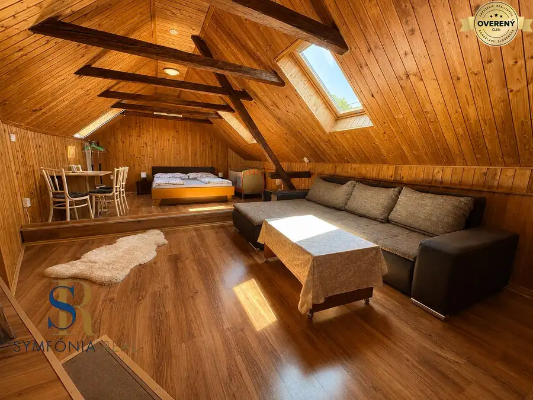
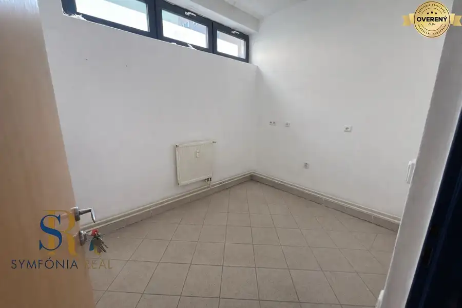
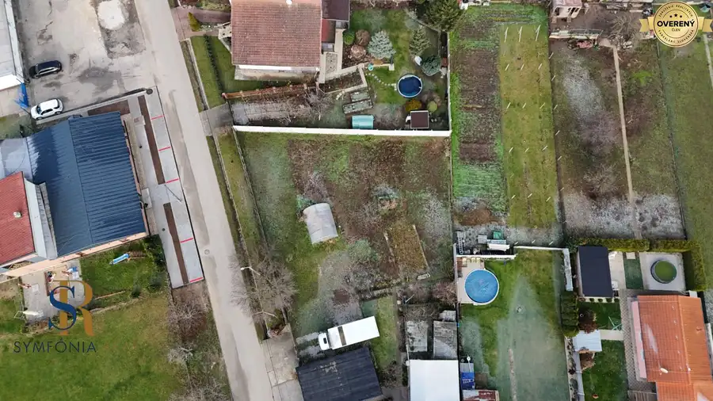

Moderný 4-izbový dom v tichej lokalite Šale – bez rezervačnej zálohy
Šaľa
- Dispozícia4-izbový
- Plocha132 m²
- Stavholopriestor
O nehnuteľnosti
Predstavte si bývanie, kde máte pokoj, súkromie a moderný komfort – a pritom ste stále v meste. V tichej a kľudnej lokalite Šale vám ponúkame priestranný
4-izbový rodinný dom
– novostavbu s
terasou
, ktorá spĺňa požiadavky dnešných rodín aj náročnejších kupujúcich.
Dom je súčasťou dvojdomu a predáva sa v štádiu
holodom za 220 000€
s možnosťou dokončenia do kvalitného
štandardu za 250 000€
.
K nehnuteľnosti patrí
pozemok 350 m²
, zastavaná plocha je
132 m²
a príjemným bonusom je zastrešená
terasa
s výmerou
13,21 m²
.
Premyslená dispozícia spája funkčnosť s komfortom:
- priestranná vstupná chodba
- samostatná toaleta
- technická miestnosť s predprípravou na práčku
- kúpeľňa s vaňou, sprchovým kútom, umývadlom a toaletou
- dve samostatné izby
- veľkorysá kuchyňa spojená s obývacou izbou a jedálňou s výstupom na terasu
- komora
- samostatná izba s výstupom na pozemok
Tento dom je pripravený na život s nízkymi prevádzkovými nákladmi a vysokým komfortom.
V cene holodomu získate:
- predprípravu na vonkajšie elektrické žalúzie
- predprípravu na krb
- predprípravu na klimatizáciu
- podlahové kúrenie na tepelné čerpadlo
- tepelné čerpadlo
V cene štandardu získate navyše:
- dlažbu, parkety, zárubne a dvere
- kompletnú sanitu vrátane Geberit WC
- kuchynskú linku na mieru so všetkými vstavanými spotrebičmi
Jednoducho: dokončený dom, do ktorého sa nasťahujete bez jedinej starosti – s kvalitnými materiálmi, modernou technológiou a nadčasovým štýlom.
Dom v tejto lokalite, v tejto kvalite a s takouto dispozíciou je ponuka, ktorá sa objavuje zriedkavo.
Ak hľadáte moderné, tiché a pohodlné bývanie pre rodinu, ozvite sa – rada vám dom ukážem osobne.
Neváhajte, novostavby v Šali miznú rýchlo.
UPOZORNENIE: Fotografie označené ako „VIZUALIZÁCIA majú ilustratívny charakter. Zobrazujú len možné prevedenie nehnuteľnosti podľa individuálnych predstáv alebo úprav klienta. Skutočný stav, dispozícia, vybavenie a materiály sa môžu od vizualizácie líšiť. Vizualizácia nie je záväznou ponukou ani garanciou budúceho vyhotovenia.
Dohodnite si obhliadku ešte dnes:
Ing. Monika Túry
_________________________________________________________________________________
Prečo si vybrať Symfónia Real?
-Žiadna rezervačná záloha vopred
-Férovosť pre kupujúceho aj predávajúceho
-Žiadne skryté poplatky, žiadny stres
-najvýhodnejšie financovanie : možnosť úroku od 1% pri splnení podmienok
-investujeme do vašej nehnuteľnosti = zvýšime predajnú cenu
U nás sa nemusíte starať o nič – pomôžeme vám aj s financovaním, aby ste celý proces zvládli bez obáv a zbytočného stresu.
SYMFÓNIA REAL – Buďte bez obáv, u nás je férovosť pre všetky strany.
Parametre
| Rozloha pozemku | 350 m² |
|---|---|
| Zastavaná plocha | 132 m² |
| Počet izieb | 4 |
| Stav | holopriestor |
| El. napätie | 230/400V |
| Kúpeľňa | vaňa |
| Vykurovanie | vlastné |
| Terasa | áno |
| Inžinierske siete | áno |
| Postavené z | Ytong |
| Zateplený objekt | áno |
| Krb | predpríprava |
| Prístupová cesta | asfaltová cesta |
| Novostavba | áno |
| Dátum zverejnenia | 9. 9. 2026 |
Kde to je
Mohlo by Vás zaujímať

Rodinné domy10 550 000 €Investičná príležitosť v srdci Štúrova - zabehnuté apartmány Štúrovo 9-izbový348 m² Len pár minút chôdze od obľúbeného termálneho kúpaliska Vadaš sa nachádza ubytovacie zariadenie, ktoré si počas rokov vybudovalo stabilné meno,…
Nebytové priestory5 2 000 €NA PRENÁJOM | Obchodný priestor v centre Galanty - 240 m² Galanta 240 m² Ponúkame na prenájom priestranný komerčný priestor o výmere 240 m², situovaný priamo v centre Galanty s výbornou dostupnosťou a viditeľnosťou.…
Pozemok 103 385 €NOVÁ CENA Rovinatý pozemok v Pate 713 m² - bez rezervačnej zálohy Pata 713 m² Hľadáte pozemok , ktorý je pripravený na výstavbu a ponúkne vám pokoj, priestor a istotu do budúcna? V obci Pata vám prinášame rovinatý, oplotený…